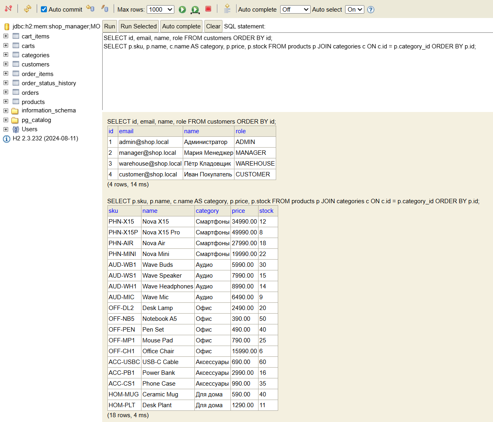
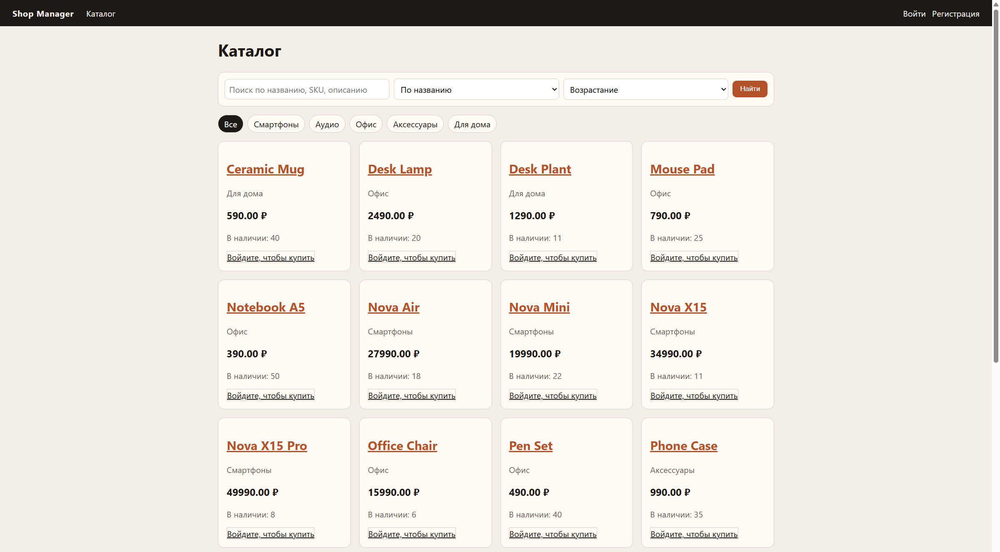
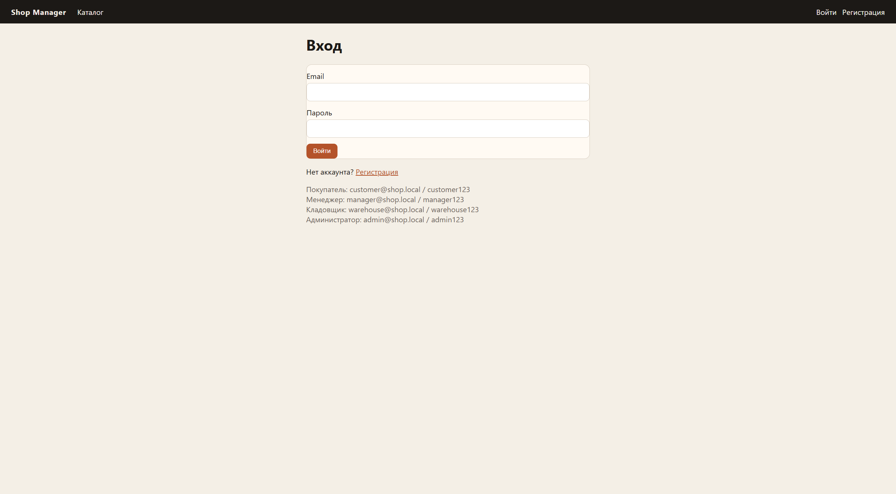
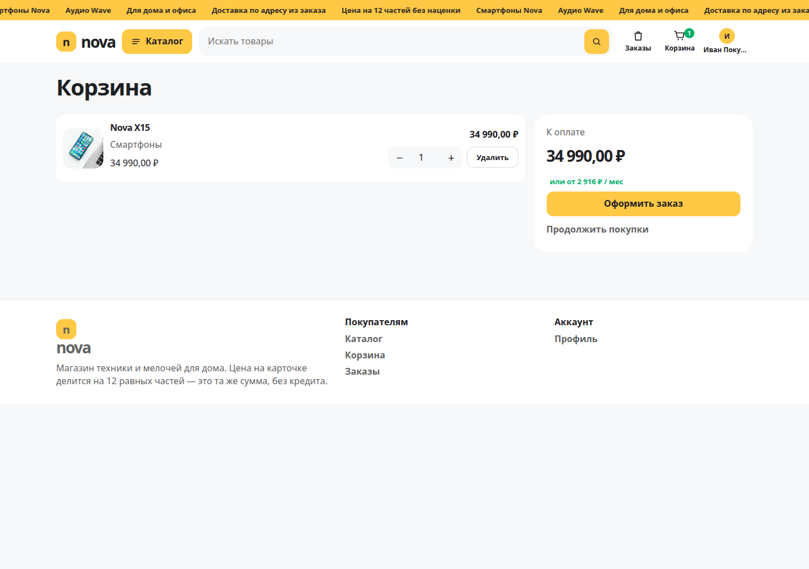
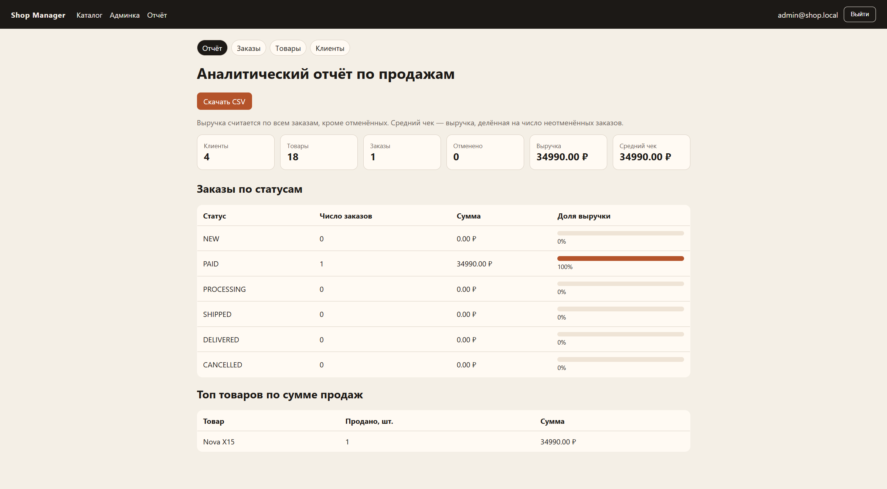
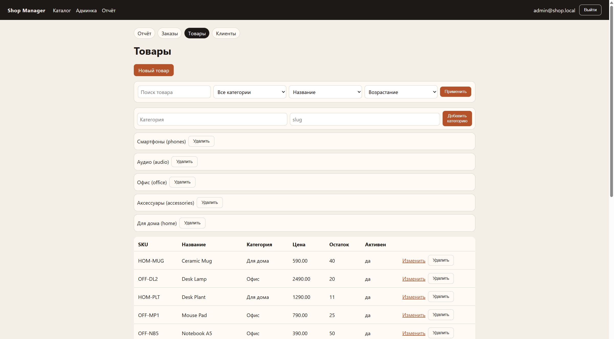
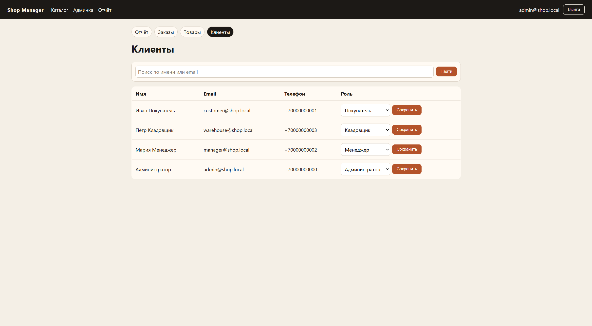

МИНИСТЕРСТВО НАУКИ И ВЫСШЕГО ОБРАЗОВАНИЯ
РОССИЙСКОЙ ФЕДЕРАЦИИ
________________________________________________
(наименование образовательной организации)
ОТЧЕТ
О ВЫПОЛНЕНИИ КУРСОВОЙ РАБОТЫ
по дисциплине «________________________________»
на тему
Система управления интернет-магазином
Shop Manager
Руководитель работы
________________ ________________
подпись инициалы, фамилия
«____» ______________ 2026 г.
Исполнитель,
студент группы ________
________________ ________________
подпись инициалы, фамилия
«____» ______________ 2026 г.
г. ______________ 2026
| Введение | 3 | |
| 1 Постановка задачи | 5 | |
| 2 Анализ предметной области | 7 | |
| 3 Функциональные требования | 9 | |
| 4 Нефункциональные требования | 12 | |
| 5 Диаграмма вариантов использования | 14 | |
| 6 Диаграмма классов | 16 | |
| 7 Диаграмма деятельности | 18 | |
| 8 Диаграмма последовательности | 20 | |
| 9 Проектирование базы данных | 22 | |
| 10 Архитектура программной системы | 25 | |
| 11 Проектирование пользовательского интерфейса | 27 | |
| 12 Реализация программного продукта | 32 | |
| 13 Тестирование | 35 | |
| 14 Результаты работы | 38 | |
| Заключение | 40 | |
| Список использованных источников | 41 | |
| Приложение А (справочное) Основные фрагменты программного кода | 43 |
Розничная торговля в сети перестала быть отдельным каналом сбыта и стала обычным способом, которым небольшой магазин принимает заказы. Даже при скромном ассортименте учёт нельзя вести только в таблице: один и тот же остаток списывают два покупателя, цена в уже оформленном заказе меняется вместе с витриной, статус «доставлен» ставится в обход оплаты. Информационная система нужна затем, чтобы правила продажи были записаны один раз и выполнялись одинаково и на сайте, и в интерфейсе сотрудника.
Цель работы — спроектировать и реализовать систему управления интернет-магазином Shop Manager. Система должна провести покупателя по цепочке «каталог — корзина — заказ» и дать администратору средства вести номенклатуру, клиентов и жизненный цикл заказа, включая аналитический отчёт по продажам.
Для достижения цели поставлены следующие задачи:
1) описать предметную область, роли и границы системы;
2) сформулировать функциональные и нефункциональные требования и связать их с модулями;
3) построить диаграммы вариантов использования, классов, деятельности и последовательности;
4) спроектировать реляционную базу и реализовать её миграцией;
5) выбрать архитектуру и средства разработки, реализовать веб-интерфейс и REST API;
6) проверить сценарии автоматическими тестами и описать результаты.
Объект исследования — процессы учёта товаров и заказов интернет-магазина. Предмет — программная реализация этих процессов средствами Java [1], Spring Boot [2] и PostgreSQL [3]. Методы работы: анализ предметной области, объектно-ориентированное проектирование, реализация модульного монолита, модульное и сценарное тестирование.
Практический результат — работающее приложение с исходным кодом, схемой базы, коллекцией запросов Postman и набором тестов. Проект опубликован в открытом репозитории и может быть запущен локально для защиты. Дальнейшее развитие (платёжный шлюз, служба доставки, личный кабинет с адресами) возможно без смены разбиения на пакеты.
Отчёт построен по ходу разработки. После постановки задачи и анализа области сформулированы требования. Затем приведены четыре диаграммы, проект базы, архитектура и интерфейс. Раздел реализации показывает, как требования отражены в коде. Тестирование и результаты фиксируют, что система делает на демонстрационных данных. В приложении собраны фрагменты, на которые опирается защита.
Требуется разработать серверное приложение, которое одновременно служит витриной для покупателя и рабочим местом администратора. Оба интерфейса, HTML-страницы и JSON API, должны использовать одни и те же правила и одну базу данных. Дублировать бизнес-логику в двух программах нельзя: смена статуса и списание остатка живут в сервисном слое и вызываются и с сайта, и из Postman.
На входе система получает действия пользователя: просмотр и поиск каталога, регистрацию, вход, изменение корзины, адрес доставки, а со стороны администратора — карточки товаров и категорий и новый статус заказа. На выходе покупатель видит каталог, состав корзины и карточку заказа. Администратор видит списки товаров, клиентов и заказов, а также отчёт: число заказов, выручку без отмен, средний чек, распределение по статусам и товары с наибольшей суммой продаж.
В системе четыре роли. Покупатель регистрируется сам, работает со своей корзиной и видит только свои заказы. Менеджер ведёт заказы: просматривает их, переводит по допустимым статусам, видит клиентов и аналитический отчёт. Кладовщик отвечает за номенклатуру: создаёт, правит и удаляет товары и категории. Администратор имеет все права сотрудников, а также назначает роли и выгружает отчёт в CSV. Сотрудники не пользуются корзиной: покупка доступна только роли покупателя. Гость без учётной записи читает каталог, но не оформляет покупку. Роль сотрудника нельзя получить через форму регистрации: открытая регистрация всегда создаёт покупателя, а роль меняет только администратор.
Заказ описывается конечным автоматом. Допустимая цепочка: новый, оплачен, в обработке, передан в доставку, доставлен. Отмена разрешена до передачи в доставку. Доставленный и отменённый заказ дальше не двигаются. Недопустимый переход, например из «новый» сразу в «доставлен», система отклоняет и объясняет причину. При отмене остаток товара возвращается на склад, при оформлении — списывается в той же транзакции, что и создание заказа.
В объём работы входят каталог, корзина, заказ, роли, отчёт, обработка ошибок и хранение данных в PostgreSQL. В объём не входят приём банковских карт, интеграция со службой доставки, склад нескольких магазинов и витрина на отдельном фронтенд-фреймворке. Оплата в учебной модели — это смена статуса менеджером или администратором, а не вызов платёжного API. Такое ограничение осознанно: учебная задача проверяет учёт и разграничение доступа, а не договор с банком.
Работа считается выполненной, если гость просматривает каталог, покупатель оформляет заказ, сотрудник меняет только разрешённый статус, каждая роль видит только свои разделы, повтор артикула и пустое обязательное поле отвергаются, чужой заказ покупателю недоступен, а отчёт строится по тем же таблицам, в которых лежит заказ.
Интернет-магазин в этой работе — это учётная система небольшого ассортимента, а не маркетплейс с тысячами продавцов. Есть один продавец. Товар принадлежит ровно одной категории. Категория нужна покупателю как фильтр («смартфоны», «аудио», «офис») и администратору как способ разложить номенклатуру. У категории есть человекочитаемый адресный ярлык, slug, и он уникален, чтобы две категории не назывались в ссылке одинаково.
Товар описывается названием, артикулом SKU, текстом, ценой, остатком и признаком активности. Артикул уникален и хранится в верхнем регистре: «phn-x15» и «PHN-X15» — один и тот же товар. Цена имеет две цифры после запятой. Для денег выбран десятичный тип, потому что двоичная дробь накапливает ошибку вида 0,1 + 0,2. Остаток — целое неотрицательное число. Признак активности позволяет убрать товар с витрины, не уничтожая историю уже сделанных заказов.
Клиент — это и покупатель, и сотрудник магазина. Их различает роль, а не отдельная таблица сотрудников. Так проще провести одну процедуру входа: Spring Security [4] загружает запись по email и выдаёт одно из полномочий ROLE_CUSTOMER, ROLE_MANAGER, ROLE_WAREHOUSE или ROLE_ADMIN. Роли разделены по обязанностям: менеджер работает с заказами и клиентами, кладовщик — с товарами и категориями, администратор совмещает обе зоны и управляет ролями. Email уникален и приводится к нижнему регистру, телефон необязателен. Пароль в предметной области существует только как односторонний хеш.
Корзина принадлежит одному клиенту. Повторное добавление того же товара увеличивает количество, а не создаёт вторую строку. Количество в корзине не может превысить текущий остаток и не может быть нулевым: уменьшение до нуля означает удаление позиции. Пустая корзина не оформляется в заказ.
Заказ фиксирует факт покупки. Кроме ссылки на клиента в нём хранятся статус, сумма, адрес и время. Позиция заказа копирует название, артикул и цену на момент оформления. Если на следующий день товар подорожает или будет переименован, уже выданный документ не изменится. Это обычный приём товарного учёта: справочник живёт своей жизнью, документ хранит снимок. История статусов отвечает на вопрос, когда заказ оплатили и из какого состояния он перешёл в текущее.
Жизненный цикл заказа отражает реальную последовательность работы магазина. Сначала заказ только создан. Затем сотрудник отмечает оплату, передаёт его в сборку, отдаёт службе доставки и закрывает как доставленный. Пока заказ ещё в магазине, клиент или сотрудник может его отменить, и товар возвращается на полку. После передачи курьеру отмена через эту систему уже некорректна: физически товар ушёл. Конечные состояния «доставлен» и «отменён» не открываются заново, иначе отчёт по выручке можно было бы переписать задним числом.
Демонстрационный ассортимент, который система создаёт при первом запуске, соответствует этой модели. Пять категорий: смартфоны, аудио, офис, аксессуары и товары для дома. Восемнадцать товаров, среди них Nova X15 за 34 990,00 и наушники Wave Buds за 5 990,00. Четыре учётные записи, по одной на роль: покупатель Иван, менеджер Мария, кладовщик Пётр и администратор. Эти данные нужны, чтобы на защите сразу показать поиск, корзину и отчёт, не заполняя справочники вручную.
Учебная цель — показать транзакцию, миграцию схемы и разграничение ролей. Поэтому реализован небольшой монолит с явной схемой данных и правилами в коде, а не учёт в электронной таблице.
Функциональные требования описывают, что система делает для гостя, покупателя и сотрудников магазина. Каждое требование в таблице 1 имеет наблюдаемый результат и модуль, в котором оно выполнено. По номеру требования на защите можно открыть класс и показать сценарий.
Таблица 1 — Функциональные требования
| Код | Требование | Кто | Где реализовано |
|---|---|---|---|
| ФТ-1 | Просмотр активного каталога | Гость | ShopWebController, GET /api/products |
| ФТ-2 | Поиск по названию, артикулу и описанию | Гость | ProductSpecifications, параметр q |
| ФТ-3 | Фильтр по категории и сортировка по имени, цене, остатку | Гость | ProductSort, параметры sort и dir |
| ФТ-4 | Регистрация покупателя и вход | Гость | AuthWebController, ShopUserDetailsService |
| ФТ-5 | Добавление, изменение и удаление позиции корзины с проверкой остатка | Покупатель | CartService |
| ФТ-6 | Оформление заказа по непустой корзине и адресу | Покупатель | OrderService.checkout |
| ФТ-7 | Просмотр только своих заказов | Покупатель | OrderWebController, ShopApiController |
| ФТ-8 | Создание, изменение и удаление товаров и категорий | Кладовщик, администратор | ProductService, CategoryService, /admin/products и /api/admin |
| ФТ-9 | Смена статуса заказа только по допустимому переходу | Менеджер, администратор | OrderStatus, OrderService.changeStatus |
| ФТ-10 | Поиск клиентов и фильтр заказов по статусу | Менеджер, администратор | CustomerService.search, список заказов админки |
| ФТ-11 | Аналитический отчёт по продажам | Менеджер, администратор | ReportService, /admin/report, GET /api/admin/report |
| ФТ-12 | Понятная ошибка при нарушении правила: 400, 401, 403, 404, 409 | Все | ApiExceptionHandler, WebExceptionHandler |
| ФТ-13 | Назначение роли пользователю, кроме себя и последнего администратора | Администратор | CustomerService.changeRole, /admin/customers |
| ФТ-14 | Выгрузка аналитического отчёта в CSV | Администратор | ReportService.toCsv, GET /admin/report.csv |
Витрина показывает только активные товары, админка показывает и скрытые, иначе позицию нельзя вернуть в продажу. Поиск не зависит от регистра. Сортировка принимается только из перечисления NAME, PRICE, STOCK, поэтому клиент не задаёт произвольное поле. Регистрация сразу создаёт покупателя и пустую корзину. Повторный email отклоняется. Корзина проверяет остаток, оформление повторяет эту проверку в транзакции и записывает снимок цены. Чужой заказ для покупателя выглядит как отсутствующий. Товар из заказа и непустую категорию удалить нельзя. Смену статуса выполняют и сайт, и API одним методом. Отчёт берёт выручку без отменённых заказов, средний чек и десять товаров с наибольшей суммой. Те же цифры администратор скачивает файлом CSV в кодировке UTF-8, который открывается в табличном редакторе. Администратор не может снять роль с самого себя и с последнего администратора, иначе магазин остался бы без управляющего. Ошибки уходят клиенту без стека вызовов.
Нефункциональные требования задают качество реализации: как система защищает данные, как сохраняет целостность и насколько предсказуемо её можно собрать на другой машине. Состав требований приведён в таблице 2.
Таблица 2 — Нефункциональные требования
| Код | Требование | Как выполнено |
|---|---|---|
| НФТ-1 | Пароль хранится необратимо | BCryptPasswordEncoder в CustomerService.register |
| НФТ-2 | Разграничение ролей на каждом защищённом маршруте | SecurityConfig: каталог открыт, корзина только для CUSTOMER, заказы и отчёт для MANAGER и ADMIN, товары для WAREHOUSE и ADMIN, роли и CSV только для ADMIN |
| НФТ-3 | Хеш пароля не попадает в JSON | Ответ строится из CustomerResponse, сущность Customer наружу не сериализуется |
| НФТ-4 | Формы сайта защищены от подделки межсайтового запроса | CSRF Spring Security включён для HTML; для /api отключён из-за HTTP Basic в Postman |
| НФТ-5 | Списание остатка и создание заказа атомарны | Одна транзакция OrderService.checkout |
| НФТ-6 | Схема базы версионируется и проверяется при старте | Flyway, миграция V1__init.sql, Hibernate ddl-auto: validate |
| НФТ-7 | Сборка воспроизводима на JDK 17 | Gradle Wrapper, toolchain Java 17 |
| НФТ-8 | Интерфейс на русском языке, ошибки видны на той же странице | Шаблоны Thymeleaf, flash-сообщения WebExceptionHandler |
| НФТ-9 | Учебный объём данных обрабатывается без отдельного аналитического хранилища | Отчёт — запросы JPQL к тем же таблицам orders и order_items |
Хеш пароля остаётся внутри сущности и загрузчика пользователей. Для паролей применён алгоритм BCrypt [5]. Список клиентов и JSON отдают email, имя, телефон и роль. Шаблоны только скрывают лишние ссылки. Запрет стоит в фильтрах: прямой POST /api/admin/products от покупателя получает 403. Формы сайта передают токен CSRF, его подставляет Thymeleaf [6]. Для префикса /api проверка CSRF отключена, потому что Postman аутентифицируется заголовком Basic на каждый запрос. Транзакция оформления не оставляет склад списанным без заказа. CHECK в PostgreSQL отвергает отрицательные цену и остаток. Flyway [7] применяет один SQL на чистой базе, режим validate не даёт Hibernate [8] переписать таблицы. Сборка закреплена за Java 17 через Gradle Wrapper [9]. Профиль demo на H2 нужен только если сервер PostgreSQL недоступен: в нём Flyway выключен. На защите используется PostgreSQL 16. Отчёт читает оперативные таблицы и достаточен для учебного числа заказов.
Диаграмма вариантов использования фиксирует границу системы и трёх актёров. Гость работает без сессии. Покупатель — это прошедший регистрацию или вход клиент с ролью CUSTOMER. Сотрудник — клиент с одной из служебных ролей. В коде его варианты использования разделены между тремя ролями: «Смена статуса заказа», «Просмотр клиентов и заказов» и «Аналитический отчёт» доступны менеджеру (MANAGER), «Управление товарами» — кладовщику (WAREHOUSE), а роль ADMIN объединяет их и добавляет назначение ролей и выгрузку отчёта в CSV. Варианты покупателя сотрудникам недоступны. Общие действия гостя доступны и остальным: вошедший пользователь по-прежнему смотрит каталог. На рисунке 1 это показано отдельными связями, без отношения обобщения актёров, потому что после входа меняется набор полномочий, а не только имя роли.
Просмотр каталога и поиск доступны без учётной записи и возвращают активные товары. Регистрация создаёт покупателя, хеш пароля и пустую корзину. Корзина, оформление и свои заказы требуют входа. Оформление требует непустую корзину и адрес. Варианты сотрудника — товары, статусы, клиенты и отчёт — покупателю закрыты, причём каждый сотрудник видит только варианты своей роли. Отчёт можно открыть и на пустой базе: суммы тогда равны нулю.
Диаграмма классов предметной области показывает устойчивые понятия магазина и связи между ними. Служебные классы Spring (контроллеры, конфигурация безопасности, обработчики ошибок) на рисунок 2 не вынесены: они зависят от каркаса и описаны в разделе архитектуры. Здесь важны данные, которые переживают перезапуск и подчиняются правилам учёта.
Связь категории и товара — один ко многим. У товара категория обязательна. Связь клиента и корзины — один к одному: повторная корзина тому же клиенту не создаётся, это закреплено уникальным customer_id. Связь корзины и позиций, заказа и позиций, заказа и истории — один ко многим. Позиция корзины ссылается на живой товар. Позиция заказа тоже может ссылаться на товар, но название и цена продублированы, а ссылка допускает отсутствие товара, если справочную запись когда-либо уберут из учёта.
Перечисления Role и OrderStatus — не таблицы, а фиксированные наборы значений. В базе они хранятся строкой. У OrderStatus есть поведение: метод canTransitionTo читает таблицу допустимых переходов. Такой приём близок к описанию состояния в каталоге проектных решений [10]. Это делает статус не просто подписью на экране, а правилом. У Role тоже есть поведение: русское название для интерфейса и метод managesOrders, который отвечает, может ли роль видеть чужие заказы и менять их статус.
Сервисы на диаграмме не хранятся в базе, но меняют её объекты. ProductService следит за артикулом и запретом удаления. CartService меняет позиции корзины. OrderService создаёт заказ, строки, историю и меняет остаток. Контроллеры этих правил не содержат. Назначение классов приведено в таблице 3.
Таблица 3 — Назначение программных классов
| Класс | Ответственность |
|---|---|
| ProductService, CategoryService | Справочник: поиск, создание, правка, удаление с проверками |
| CustomerService | Регистрация, нормализация email, хеш пароля, корзина нового клиента |
| CartService | Состав корзины и проверка остатка до оформления |
| OrderService | Транзакция покупки, статусы, возврат остатка |
| ReportService | Сводные показатели только для чтения |
| ShopApiController, CatalogApiController | JSON, коды ответа, сборка DTO |
| Контроллеры web и admin | Страницы Thymeleaf и перенаправления |
| SecurityConfig, ShopUserDetailsService | Аутентификация и доступ по маршрутам |
Такое разделение соответствует слоистой схеме: сущность знает свои поля, сервис знает правило, контроллер знает протокол HTTP. При защите достаточно показать, что отрицательная цена отвергается в ProductService, а CHECK в базе повторяет тот же запрет. Правило не спрятано в одной только форме.
Главный процесс системы — оформление заказа. Диаграмма деятельности на рисунке 3 описывает его как последовательность проверок с развилками. Процесс начинает покупатель, уже вошедший в систему. Если сессии нет, фильтр безопасности не пускает запрос к контроллеру, и до этой деятельности выполнение не доходит.
Развилка «корзина пуста» соответствует исключению BusinessException с текстом «Корзина пуста». На сайте оно становится предупреждением и возвращает пользователя на предыдущую страницу. В API тот же случай — ответ 409. Развилка по остатку и активности устроена так же: сообщение называет товар и текущий остаток, транзакция откатывается, уже просмотренные в этом проходе позиции не остаются списанными.
Цикл по позициям заканчивается, только если каждая прошла проверку. Затем одним сохранением пишутся заказ, его строки и первая запись истории с пустым предыдущим статусом и новым статусом NEW. Очистка корзины стоит до завершения транзакции. Соседний процесс — смена статуса — короче: загрузить заказ, проверить canTransitionTo, при отмене вернуть остаток по каждой строке, дописать историю. Его имеет смысл показывать устно по перечислению OrderStatus, не смешивая с рисунком покупки.
Диаграмма последовательности на рисунке 4 раскрывает ту же покупку по объектам программы. Участники: покупатель, страница оформления, OrderWebController, CurrentUser, OrderService, CartService и OrderRepository. Репозиторий товаров на рисунке свёрнут внутрь сервисов, чтобы линия жизни осталась читаемой. Смысл обмена в том, что контроллер не считает сумму и не уменьшает stock сам.
Покупатель отправляет форму с адресом. Контроллер по объекту Authentication находит Customer и вызывает заказ. OrderService запрашивает корзину у CartService. Тот либо находит существующую вместе с позициями и товарами, либо создаёт пустую. Пустая корзина приводит к отказу ещё до цикла. В цикле сервис заказа меняет остаток у уже загруженных объектов Product: они находятся в той же персистентной сессии, поэтому отдельная команда обновления товара не пишется вручную, её выполнит фиксация транзакции.
Сообщение save уходит в OrderRepository. Каскадное сохранение записывает позиции и историю вместе с заголовком заказа. Ответ контроллера — перенаправление на карточку заказа, а не повторный показ формы. При обновлении страницы браузер не отправит оформление второй раз. В API та же цепочка заканчивается кодом 201 и телом OrderResponse: идентификатор, статус NEW, сумма, адрес, строки и история из одной записи.
Отдельно стоит обмен при отказе в доступе, его на рисунке нет, но его легко проговорить. Запрос покупателя к /api/admin/products не создаёт объект ProductService для записи. Фильтр безопасности сравнивает роль с правилом hasAnyRole("ADMIN", "WAREHOUSE") и возвращает 403 раньше контроллера. Так же отказ получает сотрудник, который пытается положить товар в корзину: маршрут /api/cart открыт только роли CUSTOMER. Запрос без заголовка Authorization к /api/cart заканчивается 401. Эти две развилки закрывают требования ФТ-4 и ФТ-12 со стороны протокола.
База спроектирована как нормализованный учёт справочников и документов. Справочники — категории, товары и клиенты. Документы — заказ и его строки. Корзина занимает промежуточное положение: она долгоживущая, как справочник клиента, но её состав временный и очищается при покупке. История статусов — журнал, его строки не редактируются прикладным сценарием, только добавляются. Связи таблиц показаны на рисунке 5.
Физически схему создаёт миграция Flyway V1__init.sql при первом старте с профилем PostgreSQL. Идентификаторы — BIGSERIAL. Деньги — NUMERIC(12,2). Время создания клиента, заказа и записи истории — TIMESTAMPTZ, в приложении ему соответствует Instant, часовой пояс JDBC установлен в UTC. Строковые статусы ограничены длиной 20, роли и статусы совпадают с именами констант Java.
Таблица categories хранит name и уникальный slug. Таблица products ссылается на категорию, требует уникальный sku, запрещает отрицательные price и stock и по умолчанию считает товар активным. Таблица customers хранит email, имя, необязательный телефон, password_hash и роль. Таблица carts содержит не более одной строки на клиента. Таблица cart_items запрещает неположительное количество и повтор пары «корзина, товар». Удаление корзины каскадом удаляет её позиции. Заказ при удалении, если бы такой сценарий появился, забрал бы строки и историю. Прикладной сценарий заказы не удаляет: отмена меняет статус.
Индексы выбраны по реальным фильтрам интерфейса. Индекс по category_id ускоряет фильтр витрины. Индекс по customer_id ускоряет «мои заказы». Составной индекс по status и created_at по убыванию обслуживает ленту заказов администратора с фильтром по статусу. Уникальные ограничения email, sku, slug и пары корзины сами по себе являются индексами.
Целостность держится на трёх уровнях. Внешние ключи не дают сослаться на отсутствующую категорию, клиента или товар корзины. CHECK не даёт записать отрицательные деньги и количество. Транзакция checkout либо создаёт согласованный комплект «остатки + заказ + пустая корзина», либо не меняет ничего. Отмена симметрична списанию: к остатку каждой строки, у которой ссылка на товар ещё жива, прибавляется quantity.
Реляционная модель выбрана потому, что задание требует PostgreSQL, а правила магазина выражаются ключами: один email, одна корзина, неотрицательная цена. Класс ShopOrder отображается на таблицу orders. Связи — ManyToOne и OneToMany с ленивой загрузкой, списки заказа сохраняются каскадом. Чтение корзины и карточки товара идёт запросом с join fetch, чтобы страница не собирала связи по одной.
Запуск на чистой базе состоит из двух команд, уже выполненных в среде разработки: создать пользователя shop с паролем shop и базу shop_manager с этим владельцем. Пароль учебный и совпадает с application.yml и docker-compose.yml. Схема public передана пользователю shop, иначе Flyway на PostgreSQL 16 не смог бы создавать таблицы. После этого команда bootRun применяет миграцию сама.
Содержимое базы после первого запуска показано на рисунке 6. Снимок сделан в веб-консоли H2 профиля demo, где Hibernate строит те же восемь таблиц по сущностям. Первый запрос выводит учётные записи всех четырёх ролей без хеша пароля, второй соединяет товары с категориями и показывает артикул, цену и остаток восемнадцати демонстрационных позиций.

Система построена как модульный монолит [11]. Это один процесс Spring Boot, один порт 8080 и одна база. Пакеты разрезаны по областям: catalog, cart, customer, order, report. Рядом лежат технические пакеты api, web, admin, config и common. Область order не импортирует шаблоны, а шаблон не содержит запроса к базе. Зависимость направлена от адаптера протокола к сервису и от сервиса к репозиторию.
Выбран монолит, потому что транзакция покупки должна видеть корзину, товар и заказ в одном соединении с базой. Вынос корзины в отдельную службу добавил бы распределённую транзакцию без пользы для учебного объёма. Границы пакетов при этом уже проведены: отчёт читает репозитории, но не меняет заказ, каталог не знает о статусах. Если позже понадобится отдельный контур чтения отчёта, ReportService можно перенести, не переписывая витрину.
Стек зафиксирован в build.gradle. Java 17, Spring Boot 3.5, Spring Web, Thymeleaf и дополнение безопасности для шаблонов, Spring Data JPA [12], Validation [13], Spring Security, Actuator, Flyway с модулем PostgreSQL. Драйвер PostgreSQL нужен в основном запуске, H2 — в тестах и профиле demo. Сборка идёт через Gradle Wrapper, репозиторий зависимостей — Maven Central.
Два адаптера входят в одни сервисы. Пакет web отдаёт HTML: каталог, карточка, корзина, оформление, список и карточка заказа, регистрация и вход. Пакет admin отдаёт страницы сотрудника и тоже вызывает ProductService, OrderService, CustomerService и ReportService. Пакет api отдаёт JSON в духе архитектурного стиля REST [14]. DTO лежат в CatalogDtos, ShopDtos и ReportDtos. Входные записи аннотированы ограничениями: почта, непустые строки, неотрицательная цена, количество не меньше нуля или единицы в зависимости от операции. Метод контроллера помечен @Valid, поэтому нарушение ограничения становится 400 ещё до сервиса.
Конфигурация данных разделена по профилям. application.yml указывает JDBC URL PostgreSQL, включает Flyway и ставит Hibernate в режим проверки схемы. application-demo.yml подменяет источник на память H2, выключает Flyway и включает консоль H2 для учебного просмотра таблиц. Тестовый application.yml тоже использует H2, на каждый тест пересоздаёт схему и сажает сервер на случайный порт. Класс DataSeeder отмечен профилем «не test»: в боевом и демонстрационном запуске он заполняет витрину, в тесте данные создаёт сам тестовый класс, чтобы сценарии не зависели от полного набора из восемнадцати товаров.
Безопасность собрана в одном SecurityFilterChain. Открыты корень, карточки товаров, стили, вход, регистрация, ошибка, проверка жизнеспособности /actuator/health, чтение API каталога и регистрация через API. Всё остальное требует аутентификации. Дальше правила идут от частных к общим. Корзина, оформление и «мои заказы» требуют роль CUSTOMER. Выгрузка отчёта в CSV и смена роли пользователя требуют ADMIN. Отчёт, заказы админки, смена статуса и список клиентов открыты для MANAGER и ADMIN. Товары и категории, и на сайте, и в API, открыты для WAREHOUSE и ADMIN. Корень /admin пускает любого сотрудника и перенаправляет его на первый доступный раздел: администратора — на отчёт, менеджера — на заказы, кладовщика — на товары. Всё прочее под /admin и /api/admin оставлено только администратору. Вход с формы идёт на /login, после успеха — на главную. Для API включён HTTP Basic. Выход возвращает на главную. Имена полномочий строятся как ROLE_ и имя перечисления, поэтому hasRole("ADMIN") совпадает с ролью в базе.
Ошибки расходятся по двум советникам. Для контроллеров с аннотацией RestController класс ApiExceptionHandler строит JSON из времени, кода, краткого статуса и сообщения. NotFoundException даёт 404, BusinessException — 409, ошибка Validation — 400, AccessDeniedException — 403, прочие исключения — 500 с текстом «Внутренняя ошибка сервера». Для страниц WebExceptionHandler кладёт текст в flash-атрибут и возвращает на предыдущий адрес или на главную. Пользователь остаётся в сценарии, а не на пустой странице контейнера.
Оформление с сайта и POST /api/orders вызывают один OrderService.checkout. Контроллер остаток сам не списывает. На защите это видно как одно правило и два канала доступа к одной базе.
Интерфейс серверный. Каждая страница — шаблон Thymeleaf, общая шапка вынесена во фрагмент layout. Слева марка Shop Manager и ссылка на каталог. Дальше набор ссылок зависит от роли. Покупатель видит «Корзину» и «Заказы». Сотрудник видит «Админку», а менеджер и администратор ещё и «Отчёт». Внутри админки общая полоса разделов собрана во фрагмент adminNav и показывает только разрешённые роли пункты: кладовщику — «Товары», менеджеру — «Отчёт», «Заказы» и «Клиенты», администратору — все четыре. Справа показан email, кнопка «Выйти» либо пара «Войти» и «Регистрация». Скрытие ссылки не заменяет проверку доступа: прямой адрес чужого раздела всё равно вернёт 403. Внешний вид каталога показан на рисунке 7.
Визуальный каркас сознательно спокойный. Фон тёплый светлый, шапка тёмная, акцент терракотовый, сообщения об успехе зелёные, об ошибке тёмно-красные. Ширина страницы ограничена, формы уже ленты товаров. Карточки каталога стоят сеткой и переносятся на узком окне. Цель оформления — чтобы на защите было видно состояние системы, а не декоративная иллюстрация.

Главная страница совмещает каталог и фильтры. Строка поиска и два списка, категория и сортировка, передаются параметрами адреса. Результат можно обновить и показать преподавателю как закладку, например поиск подстроки nova. У активного товара видна цена и кнопка «В корзину», если вошёл покупатель. Гостю вместо кнопки показана ссылка на вход, сотруднику — пояснение «Покупка доступна только покупателям». Карточка товара повторяет цену, описание, остаток и то же действие. Форма входа показана на рисунке 8.

Страница входа содержит email, пароль и ссылку на регистрацию. Под формой указаны учебные учётки покупателя, менеджера, кладовщика и администратора, чтобы на защите не искать их в исходном тексте. Ошибка пароля выводится над полями. Регистрация спрашивает email, имя, телефон и пароль не короче шести символов. После успеха человек попадает в каталог уже вошедшим, с пустой корзиной. Корзина покупателя показана на рисунке 9.

Корзина содержит название, цену, количество, сумму строки и итог. Количество можно изменить или удалить позицию. Кнопка оформления ведёт на страницу с одним обязательным полем — адресом. Пустой адрес не уходит в заказ: на API это ограничение @NotBlank, на форме поле требуется браузером и проверяется сервисом. После успеха открывается карточка заказа: статус, адрес, состав, сумма и история.
Административный интерфейс использует те же шапку и сообщения. Список товаров даёт поиск, фильтр категории и сортировку, но включает неактивные позиции. Форма товара — одна и для создания, и для правки: категория, название, артикул, описание, цена, остаток, флаг активности. Список заказов фильтруется статусом. На карточке заказа сотрудник выбирает только следующий допустимый статус. Список клиентов ищется по имени и email. Отчёт на рисунке 10 собран из крупных чисел, полос по статусам и таблицы топа. Администратору над отчётом доступна кнопка «Скачать CSV». Список товаров приведён на рисунке 11.


Администратор видит в списке клиентов не текст роли, а выпадающий список с кнопкой «Сохранить», как на рисунке 12. Менеджеру та же страница показывает роль только для чтения. Сервис не даёт администратору изменить собственную роль и снять роль с последнего администратора, в этих случаях над таблицей появляется сообщение об ошибке.

Состояния интерфейса совпадают с ролями диаграммы вариантов использования. Гость видит каталог и приглашение войти. Покупатель видит свои разделы и не видит админку. Сотрудник не видит корзину и заказы покупателя, а в админке ему открыты только разделы своей роли. Ошибка бизнес-правила не заменяет страницу: красная строка появляется над содержимым, введённый контекст списка сохраняется за счёт возврата на предыдущий адрес.
Точка входа — класс ShopManagerApplication со стандартным запуском Spring Boot. Дальше каркас поднимает веб-сервер, источник данных и бин SecurityFilterChain. При профиле, отличном от test, DataSeeder заполняет справочники: пять категорий, восемнадцать товаров и четыре учётки, по одной на каждую роль. Каждая запись создаётся, только если её ещё нет: категория ищется по slug, товар — по артикулу, пользователь — по email. Поэтому повторный запуск ничего не задваивает, а уже работающая база получает недостающие демонстрационные записи, не теряя своих. Пароли demo-учёток проходят тот же BCrypt, что и пароль настоящего регистратора.
Каталог реализован спецификацией JPA Criteria, а не конкатенацией SQL. ProductSpecifications.search принимает строку, идентификатор категории и признак активности. Для списка витрины признак равен true, для админки не задан, и условие по активности не добавляется. Предикат поиска — дизъюнкция трёх LIKE в нижнем регистре. Сортировка собирается в ProductService из перечисления ProductSort: цена, остаток или имя. Создание товара отвергает занятый артикул, отрицательную цену и отрицательный остаток, нормализует артикул к верхнему регистру и подставляет категорию по идентификатору. Удаление заранее считает ссылки из корзины и из order_items.
Категория устроена проще. Slug обрезается, переводится в нижний регистр, пробелы заменяются дефисом. Повтор slug — конфликт. Удаление возможно, только если ProductRepository не нашёл товаров этой категории. Оба сервиса выбрасывают NotFoundException, если идентификатор неизвестен, и BusinessException, если нарушено правило. Контроллеры эти типы не разбирают по месту: это делают общие обработчики.
Регистрация в CustomerService приводит email к нижнему регистру, проверяет уникальность, записывает хеш и в той же транзакции сохраняет пустую корзину. Сайт после этого сам создаёт сессию и кладёт в неё Authentication, чтобы не заставлять человека вводить пароль второй раз. API регистрации сессию не открывает: клиент Postman дальше посылает Basic. Загрузчик пользователей ищет email в том же нормализованном виде, поэтому вход «Admin@shop.local» совпадёт с записью «admin@shop.local». Метод changeRole меняет роль существующей записи. Он ещё раз проверяет, что действует администратор, запрещает менять собственную роль и не даёт снять роль ADMIN, если в базе остался один администратор: для этого репозиторий считает записи с ролью ADMIN.
Корзина хранится в CartService. Метод getOrCreate ищет корзину запросом с позициями и товарами. addItem увеличивает количество существующей строки или создаёт новую. updateQuantity при значении меньше единицы удаляет строку. ensureStock сравнивает запрошенное количество с product.stock. Эти проверки стоят до оформления и дают раннюю ошибку на витрине. Решающая проверка всё равно повторяется в заказе.
OrderService.checkout — центральный метод работы. Он аннотирован @Transactional. Для каждой позиции проверяются активность и остаток, остаток уменьшается, в коллекцию заказа добавляется OrderItem со снимком. Сумма накапливается в BigDecimal. История получает переход из пустого состояния в NEW. Затем корзина очищается и заказ сохраняется. changeStatus загружает заказ, спрашивает у перечисления разрешение, при отмене возвращает остатки и дописывает историю. Неразрешённый переход — BusinessException с текстом вида «Нельзя сменить статус NEW → DELIVERED».
Отчёт не хранит отдельную таблицу агрегатов. ReportService в режиме только чтения берёт число клиентов, товаров и заказов, число отменённых, сумму заказов кроме CANCELLED, группировку по статусу и верх списка товаров. Доля статуса — целый процент суммы статуса от выручки. Если выручка нулевая, доля равна нулю, деления на ноль нет. Средний чек округляется до копеек по половине вверх. Запрос топа группирует строки заказа по имени из снимка, а не по текущему названию справочника, и сортирует по сумме убыванием. В отчёт попадают первые десять строк. Метод toCsv строит из того же объекта файл с колонками section, name, count, amount и percent: сводные показатели, строки статусов и строки товаров. В начало файла записана метка порядка байтов UTF-8, чтобы табличный редактор правильно показал кириллицу, а значения с запятой или кавычкой экранируются по правилам CSV.
Сборка и запуск на машине, где уже создана база shop_manager, выполняются из каталога проекта при JAVA_HOME, указывающем на JDK 17:
.\gradlew.bat bootRun
Тесты запускаются отдельно и не требуют PostgreSQL:
.\gradlew.bat test
Профиль без сервера базы: bootRun с аргументом --spring.profiles.active=demo. Для защиты этот режим запасной. Основной контур — PostgreSQL 16 на localhost, порт 5432, пользователь shop. Коллекция Postman импортируется из postman/shop-manager.postman_collection.json и повторяет каталог, корзину, заказ, смену статуса и отчёт с Basic-авторизацией учебных учёток.
На защите достаточно трёх мест: перечисление переходов статуса, спецификация поиска и метод конфигурации доступа. Фрагменты приведены в приложении А.
Проверка делится на автоматические тесты и на сценарий, который выполняется в браузере на защите. Автоматические тесты поднимают контекст Spring на встроенной H2 с профилем test. Схема создаётся Hibernate заново, порт сервера случайный, поэтому тест не мешает уже запущенному приложению на порту 8080. Класс ShopScenarioTest через MockMvc вызывает тот же HTTP API, что и Postman, и подставляет HTTP Basic. Класс OrderStatusTest проверяет таблицу переходов без базы и без веб-слоя.
Перед сценариями, если категорий ещё нет, тест создаёт категорию «Смартфоны», товары Nova X15 и Wave Buds, администратора и покупателя. Дальше методы идут по требованиям из раздела 3. Перечень из четырнадцати сценариев приведён в таблице 4. Вместе с двумя проверками OrderStatusTest набор состоит из шестнадцати тестов, и все они проходят командой gradlew test.
Таблица 4 — Сценарии автоматического тестирования
| Тест | Что проверяет | Ожидание | Требование |
|---|---|---|---|
| t01 | GET /api/cart без входа | 401 | ФТ-4, ФТ-12 |
| t02 | Покупатель создаёт товар | 403 | ФТ-8, НФТ-2 |
| t03 | Администратор создаёт товар | 201, артикул сохранён | ФТ-8 |
| t04 | Чтение каталога | 200, не меньше двух товаров | ФТ-1 |
| t05 | Поиск q=nova | в имени есть Nova | ФТ-2 |
| t06 | Сортировка PRICE по убыванию | первый товар не дешевле 10 000 | ФТ-3 |
| t07 | Правка описания Nova X15 | 200, описание обновлено | ФТ-8 |
| t08 | Повтор артикула PHN-X15 | 409 | ФТ-12 |
| t09 | Корзина, заказ, статус PAID, отчёт | 201, затем 200 и непустой топ | ФТ-5, ФТ-6, ФТ-9, ФТ-11 |
| t10 | Переход NEW → DELIVERED | 409 | ФТ-9 |
| t11 | Удаление товара, который уже в заказе | 409 | ФТ-8 |
| t12 | Пустой артикул | 400 | ФТ-12 |
| t13 | Администратор открывает корзину | 403 | НФТ-2 |
| t14 | Выгрузка отчёта в CSV покупателем и администратором | 403, затем 200 и text/csv | ФТ-14, НФТ-2 |
Отдельно OrderStatusTest подтверждает разрешённые шаги NEW→PAID, NEW→CANCELLED, PAID→PROCESSING, PROCESSING→SHIPPED, SHIPPED→DELIVERED и запрещает прыжок в DELIVERED, возврат из DELIVERED в NEW, оживление CANCELLED и отмену из SHIPPED. Эти проверки дешёвые и ломаются сразу, если таблицу переходов случайно ослабят.
Ручной сценарий для защиты повторяет t09 на PostgreSQL и в браузере. Гость открывает каталог и поиск. Запрос корзины без входа не проходит. Покупатель customer@shop.local входит, кладёт Nova X15, указывает адрес, видит заказ NEW и уменьшенный остаток. Менеджер manager@shop.local переводит заказ в PAID, пытается поставить конечный статус слишком рано и получает сообщение о недопустимом переходе, затем открывает отчёт. В отчёте есть выручка этого заказа и строка товара. Кладовщик warehouse@shop.local видит в админке только товары, а прямой адрес /admin/orders возвращает ему 403. Администратор admin@shop.local скачивает отчёт в CSV и меняет роль пользователя в списке клиентов. Покупательский запрос на создание товара в Postman возвращает 403.
Ограничение испытаний честное. Набор не измеряет нагрузку и не гоняет два одновременных оформления последнего экземпляра отдельным многопоточным тестом. Защита от такой гонки заложена уровнем изоляции транзакции и повторной проверкой остатка, но отдельный стресс-тест в работу не входил. Профиль H2 в тестах совместим с PostgreSQL по используемым конструкциям, а эталонная схема всё равно задана миграцией PostgreSQL.
В результате получен программный продукт Shop Manager: серверное приложение, схема PostgreSQL, веб-интерфейс, REST API, коллекция Postman, автоматические тесты и пояснительная записка. Исходный код опубликован по адресу https://github.com/AzaEv/shop-manager . Локально система запускается командой gradlew bootRun и слушает порт 8080.
Реализованы все функциональные требования ФТ-1–ФТ-14. Каталог из восемнадцати демонстрационных товаров доступен без входа. Поиск по подстроке nova оставляет четыре смартфона Nova и чехол Phone Case, в описании которого упомянута модель Nova X15: поиск идёт и по описанию. Покупатель оформляет заказ, остаток списывается, в истории появляется статус NEW. Кладовщик ведёт номенклатуру, менеджер фильтрует заказы, меняет их статус и строит отчёт, администратор дополнительно назначает роли и выгружает отчёт в CSV. Недопустимые действия возвращают различимые ответы: 401 без входа, 403 для чужой роли, 400 для пустого поля, 404 для неизвестного объекта, 409 для занятого артикула, пустой корзины и запрещённого статуса.
База содержит восемь таблиц, три индекса под фильтры интерфейса и ограничения уникальности, внешнего ключа и диапазона. Миграция применяется автоматически. Hibernate схему сам не изменяет. Пароли демонстрационных и зарегистрированных пользователей хранятся как хеш BCrypt. В ответах API этого поля нет.
Нефункциональные требования НФТ-1–НФТ-9 выполнены в объёме учебной системы. Сборка закреплена за Java 17. Для машины без PostgreSQL есть профиль demo, но основной результат работы — запуск на PostgreSQL 16 с базой shop_manager. Отчёт по продажам считается по оперативным таблицам и после одного заказа Nova X15 показывает выручку 34 990,00, один неотменённый заказ и соответствующий средний чек.
Ограничения результата совпадают с постановкой задачи. Нет онлайн-оплаты, трекинга доставки, нескольких складов и отдельного одностраничного клиента. CSRF для API отключён намеренно под HTTP Basic. Пароли демонстрационных учётных записей (admin123, manager123, warehouse123, customer123) учебные, они указаны на форме входа, а пароли покупателя и администратора — ещё и в коллекции Postman. Для публикации за пределами занятия их следует сменить или отключить наполнение DataSeeder.
Цель работы достигнута: спроектирована и реализована система управления интернет-магазином, которая ведёт каталог, корзину и заказ и разделяет доступ покупателя, менеджера, кладовщика и администратора. Предметная область сведена к восьми сущностям и конечному автомату статусов. Требования трассируются до пакетов и до тестовых методов. Текст отчёта оформлен по ГОСТ 7.32-2017 [15].
Проектирование зафиксировано диаграммами вариантов использования, классов, деятельности и последовательности, а также логической схемой базы. Архитектура модульного монолита позволила иметь сайт и API над одним сервисным слоем. Списание остатка и создание заказа выполняются в одной транзакции, цена хранится с точностью до копейки, документ заказа хранит снимок товара.
Проверка покрывает отказ без входа, запрет покупателю менять каталог, создание и правку товара, поиск, сортировку, конфликт артикула, полный цикл заказа с отчётом, запрещённый переход статуса, запрет удаления проданного товара, ошибку валидации, запрет корзины для сотрудника и выгрузку отчёта в CSV только администратором. Этого достаточно, чтобы на защите воспроизвести требования по коду и по экрану.
Дальнейшая работа может добавить оплату как отдельный переход с внешним подтверждением, не ломая таблицу статусов, и вынести отчёт в отдельное чтение, если оперативных заказов станет много. Каркас пакетов и миграций для этого уже есть.
1. Java Language Specification. Java SE 17 Edition [Электронный ресурс]. — URL: https://docs.oracle.com/javase/specs/jls/se17/html/ (дата обращения: 07.10.2026).
2. Spring Boot Reference Documentation. Version 3.5 [Электронный ресурс]. — URL: https://docs.spring.io/spring-boot/reference/ (дата обращения: 07.10.2026).
3. PostgreSQL 16 Documentation [Электронный ресурс]. — URL: https://www.postgresql.org/docs/16/ (дата обращения: 07.10.2026).
4. Spring Security Reference [Электронный ресурс]. — URL: https://docs.spring.io/spring-security/reference/ (дата обращения: 07.10.2026).
5. Provos, N. A Future-Adaptable Password Scheme / N. Provos, D. Mazières // Proceedings of the USENIX Annual Technical Conference. — Monterey, 1999. — P. 81–92.
6. Thymeleaf Documentation [Электронный ресурс]. — URL: https://www.thymeleaf.org/documentation.html (дата обращения: 07.10.2026).
7. Flyway Documentation [Электронный ресурс]. — URL: https://documentation.red-gate.com/flyway (дата обращения: 07.10.2026).
8. Hibernate ORM User Guide [Электронный ресурс]. — URL: https://docs.jboss.org/hibernate/orm/current/userguide/html_single/ (дата обращения: 07.10.2026).
9. Gradle User Manual [Электронный ресурс]. — URL: https://docs.gradle.org/current/userguide/userguide.html (дата обращения: 07.10.2026).
10. Gamma, E. Design Patterns: Elements of Reusable Object-Oriented Software / E. Gamma, R. Helm, R. Johnson, J. Vlissides. — Boston : Addison-Wesley, 1994. — 395 p.
11. Fowler, M. Patterns of Enterprise Application Architecture / M. Fowler. — Boston : Addison-Wesley, 2002. — 533 p.
12. Spring Data JPA Reference [Электронный ресурс]. — URL: https://docs.spring.io/spring-data/jpa/reference/ (дата обращения: 07.10.2026).
13. Jakarta Bean Validation [Электронный ресурс] : specification. — URL: https://jakarta.ee/specifications/bean-validation/ (дата обращения: 07.10.2026).
14. Fielding, R. T. Architectural Styles and the Design of Network-based Software Architectures : dissertation / R. T. Fielding. — Irvine : University of California, 2000.
15. ГОСТ 7.32—2017. Система стандартов по информации, библиотечному и издательскому делу. Отчет о научно-исследовательской работе. Структура и правила оформления. — Москва : Стандартинформ, 2017.
(справочное)
Основные фрагменты программного кода
Ниже приведены фрагменты, на которых держатся доступ, статусы заказа, покупка, поиск и схема базы. Полный текст находится в репозитории проекта. Фрагменты приведены на рисунках А.1–А.6.
http
.csrf(csrf -> csrf.ignoringRequestMatchers(
"/api/**", "/h2-console/**"))
.authorizeHttpRequests(auth -> auth
.requestMatchers("/", "/products/**", "/css/**",
"/login", "/register", "/error",
"/actuator/health", "/h2-console/**")
.permitAll()
.requestMatchers(HttpMethod.GET,
"/api/products/**", "/api/categories/**")
.permitAll()
.requestMatchers(HttpMethod.POST,
"/api/auth/register").permitAll()
.requestMatchers("/cart", "/cart/**", "/checkout", "/orders",
"/orders/**", "/api/cart", "/api/cart/**").hasRole("CUSTOMER")
.requestMatchers(HttpMethod.POST, "/api/orders").hasRole("CUSTOMER")
.requestMatchers("/admin/report.csv").hasRole("ADMIN")
.requestMatchers(HttpMethod.POST,
"/admin/customers/*/role").hasRole("ADMIN")
.requestMatchers("/admin/report", "/api/admin/report",
"/admin/orders", "/admin/orders/**")
.hasAnyRole("ADMIN", "MANAGER")
.requestMatchers(HttpMethod.POST, "/api/orders/*/status")
.hasAnyRole("ADMIN", "MANAGER")
.requestMatchers("/admin/products/**", "/admin/categories/**",
"/api/admin/products/**", "/api/admin/categories/**")
.hasAnyRole("ADMIN", "WAREHOUSE")
.requestMatchers("/admin/customers", "/api/customers/**")
.hasAnyRole("ADMIN", "MANAGER")
.requestMatchers(HttpMethod.GET, "/admin")
.hasAnyRole("ADMIN", "MANAGER", "WAREHOUSE")
.requestMatchers("/admin/**", "/api/admin/**").hasRole("ADMIN")
.anyRequest().authenticated())
.formLogin(form -> form.loginPage("/login")
.defaultSuccessUrl("/", true))
.httpBasic(Customizer.withDefaults());
Рисунок А.1 — Правила доступа в SecurityConfig (сокращено)
private static final Map<OrderStatus, Set<OrderStatus>> TRANSITIONS = Map.of(
NEW, EnumSet.of(PAID, CANCELLED),
PAID, EnumSet.of(PROCESSING, CANCELLED),
PROCESSING, EnumSet.of(SHIPPED, CANCELLED),
SHIPPED, EnumSet.of(DELIVERED),
DELIVERED, EnumSet.noneOf(OrderStatus.class),
CANCELLED, EnumSet.noneOf(OrderStatus.class));
public boolean canTransitionTo(OrderStatus next) {
return TRANSITIONS.get(this).contains(next);
}
Рисунок А.2 — Допустимые переходы статуса заказа
for (CartItem cartItem : cart.getItems()) {
Product product = cartItem.getProduct();
if (!product.isActive()) {
throw new BusinessException("Товар недоступен: " + product.getName());
}
if (product.getStock() < cartItem.getQuantity()) {
throw new BusinessException("Недостаточно товара «" + product.getName()
+ "». В наличии: " + product.getStock());
}
product.setStock(product.getStock() - cartItem.getQuantity());
OrderItem item = new OrderItem();
item.setOrder(order);
item.setProduct(product);
item.setProductName(product.getName());
item.setSku(product.getSku());
item.setUnitPrice(product.getPrice());
item.setQuantity(cartItem.getQuantity());
order.getItems().add(item);
total = total.add(product.getPrice()
.multiply(BigDecimal.valueOf(cartItem.getQuantity())));
}
Рисунок А.3 — Списание остатка при оформлении заказа
if (query != null && !query.isBlank()) {
String like = "%" + query.trim().toLowerCase(Locale.ROOT) + "%";
predicates.add(cb.or(
cb.like(cb.lower(root.get("name")), like),
cb.like(cb.lower(root.get("sku")), like),
cb.like(cb.lower(cb.coalesce(root.get("description"), "")), like)));
}
Рисунок А.4 — Поиск товара по названию, артикулу и описанию
CREATE TABLE products (
id BIGSERIAL PRIMARY KEY,
category_id BIGINT NOT NULL REFERENCES categories (id),
name VARCHAR(200) NOT NULL,
sku VARCHAR(64) NOT NULL UNIQUE,
description TEXT,
price NUMERIC(12, 2) NOT NULL CHECK (price >= 0),
stock INTEGER NOT NULL CHECK (stock >= 0),
active BOOLEAN NOT NULL DEFAULT TRUE
);
Рисунок А.5 — Фрагмент миграции таблицы товаров
@Query("""
select coalesce(sum(o.total), 0)
from ShopOrder o
where o.status <> com.shopmanager.order.OrderStatus.CANCELLED
""")
BigDecimal revenueExcludingCancelled();
Рисунок А.6 — Выручка без отменённых заказов